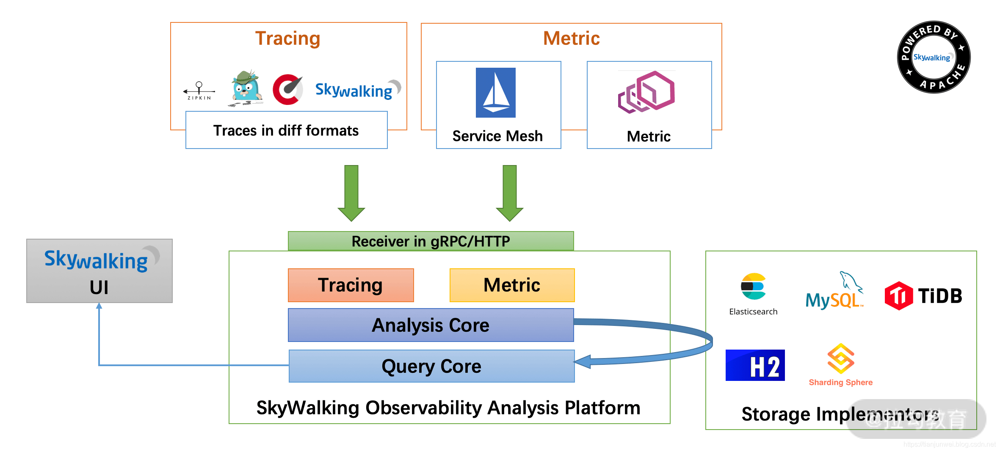

- 00 开篇词 为什么每个测试人都要学好性能测试？.md.html
- 01 JMeter 的核心概念.md.html
- 02 JMeter 参数化策略.md.html
- 03 构建并执行 JMeter 脚本的正确姿势.md.html
- 04 JMeter 二次开发其实并不难.md.html
- 05 如何基于 JMeter API 开发性能测试平台？.md.html
- 06 Nginx 在系统架构中的作用.md.html
- 07 你真的知道如何制定性能测试的目标吗？.md.html
- 08 性能测试场景的分类和意义.md.html
- 09 如何制定一份有效的性能测试方案？.md.html
- 10 命令行监控 Linux 服务器的要点.md.html
- 11 分布式服务链路监控以及报警方案.md.html
- 12 如何把可视化监控也做得酷炫？.md.html
- 13 Docker 的制作、运行以及监控.md.html
- 14 如何从 CPU 飙升定位到热点方法？.md.html
- 15 如何基于 JVM 分析内存使用对象？.md.html
- 16 如何通过 Arthas 定位代码链路问题？.md.html
- 17 如何应对 Redis 缓存穿透、击穿和雪崩？.md.html
- 18 如何才能优化 MySQL 性能？.md.html
- 19 如何根治慢 SQL？.md.html
- 20 结束语 线上全链路性能测试实践总结.md.html
- 捐赠
11 分布式服务链路监控以及报警方案
上一讲我们主要讲解了硬件的命令行资源监控，相信你已经学会了通过命令行的方式查看硬件瓶颈。
那我提一个问题，为什么会有硬件瓶颈呢？或者我说得更直白一点，如果服务器上没有应用还会造成硬件瓶颈吗？显然是不会的，所以我想向你传递一个观点：呈现出来的硬件瓶颈绝大多数是表象问题，我们往往需要在系统应用上寻找问题的根因。而寻找系统问题的根因，对于系统链路监控也是必不可少的，所以这一讲我将带你学习如何进行基于系统链路的监控。
为什么要链路监控？
随着微服务的流行，链路监控越来越受重视。微服务架构是根据业务进行拆分，对外统一暴露API 接口，而内部可能是分布式服务、分布式对象存储等，如图 1 所示。

图 1：微服务架构
这些组件共同构成了复杂的分布式网络。而分布式系统一旦出现问题，比如一个请求经过多个微服务之后出现了调用失败的问题，或者一个请求经过多个微服务之后 Response 时间过长，但具体是哪个微服务节点的问题我们并不知道。只能去服务器上查看调用经过的每个微服务的日志，当然这种方式的效率是比较低的，相当于人肉运维。
随着业务体系越来越复杂，加上服务间的相互依赖关系，微服务其中一个节点出现了问题，很可能牵一发而动全身，导致严重的后果。在这样的情况下，分布式链路监控的价值就体现出来了，它可以让你清晰地知道跨服务调用的链路耗时信息、执行方法等，并从整体到局部将信息呈现出来，可以帮助你节约故障排查时间。
全链路监控选择依据
全链路监控系统有很多，可以从这几方面选择：
- 探针的性能消耗，探针是搜集信息的“情报员”，尤其是在多节点情况下，搜集数据的成本会越来越高，监控组件服务的影响应该做到足够小、数据分析快、性能占用小；
- 对代码的非侵入性，减少开发的维护成本；
- 监控、分析的维度尽可能多。
目前市面上的全链路监控工具很多，比如 CAT、SkyWalking、Pinpoint 等，对于工具的选型来说最重要的是采样数据对系统的性能消耗足够小、数据分析和展示快、监控的维度尽可能丰富，简单比较下这几个工具。
- CAT：是由美团和携程的同学开发的，通过代码埋点的侵入式方式，对应用日志分析、监控、展示等，不过侵入式的方式会带来开发以及维护成本的增加。
- SkyWalking：也是由国人开发，目前项目已经提交到 Apache 孵化组织，无侵入性、UI 展示简洁清晰。
- Pinpoint：由韩国人开发，相对于 SkyWalkingg 提供了更为详尽的链路监控信息，不过数据采集带来的性能损耗相对于 SkyWalking 来说比较大。
综上我将以 SkyWalking 为例给你介绍下链路监控，希望通过介绍，你可以掌握 SkyWalking 的具体使用步骤和链路监控工具可以给我们带来什么好处，通过本讲的学习你也可以自由选择链路监控工具去实践。
SkyWalking 的模块分析
首先来看下 SkyWalking 的组件示意图：

图 2：SkyWalking 的组件示意图
- Tracing 和 Metric ： 在应用上采集 Tracing（调用链数据）和 Metric（指标）信息通过 HTTP 或者 gRPC 方式发送数据到 Analysis Platform。
- Analysis Platform：数据的采集和计算，将传输的 Tracing 和 Metric 数据进行整合分析，通过 Analysis Core 模块把数据写入相关的数据库中。
- Storage：SkyWalking 的存储，支持以 ElasticSearch、MySQL、TiDB 等数据库进行数据存储，其中 ElasticSearch、MySQL 用的居多。
- SkyWalking UI：Web 可视化平台，用来展示落地的数据以及图表，比如链路调用、服务结构等。
1.安装部署过程以及相关的注意事项
首先下载 SkyWalking 安装包并进行解压：
wget https://github.com/apache/SkyWalking/archive/v8.0.1.tar.gz
tar -zxvf v8.0.1.tar.gz
解压后可以看到如下文件夹：

我们讲解下这个主要文件的作用。
（1）修改配置文件 config/application.yml。在这里先进行数据库的配置，我使用当前服务器上的 mysql 来进行存储：
mysql:
properties:
jdbcUrl: ${SW_JDBC_URL:"jdbc:mysql://127.0.0.1:3306/swtest"}
dataSource.user: ${SW_DATA_SOURCE_USER:root}
dataSource.password: ${SW_DATA_SOURCE_PASSWORD:123456}
将上述的配置文件根据自己的数据库实际地址修改，修改完成后进行启动：
$ bin/oapService.sh
SkyWalking OAP started successfully!
（2）接着来看 SkyWalking UI 的相关配置，由于 SkyWalking UI 的默认端口是 8080，这个端口是很多应用的默认端口，容易产生冲突，你可以修改一下，如下所示：
# 修改webapp/webapp.yml
server:
port: 18080
然后启动 SkyWalking UI 服务，启动完成后你会看到如下信息：
$ bin/webappService.sh
SkyWalking Web Application started successfully!
这里我强烈建议，不管是第一步还是第二步中的 started successfully，都并不意味着真正的启动成功，一般在提示 started successfully 后，还需要去 logs 文件夹下查看相关日志来判断启动过程中是否存在异常。
UI 界面启动成功后示意图如下：
（3）本地启动微服务。我 demo 里包含 system、auth、user 等服务，通过配置 SkyWalking Agent 的方式启动服务，示意如下：
nohup java -server -Xms256m -Xmx256m -Dspring.profiles.active=dev -Dspring.cloud.nacos.discovery.server-addr=127.0.0.1:8848 -javaagent:/root/apm/apache-SkyWalking-apm-bin/agent/SkyWalking-agent.jar=agent.service_name=cctuser -Dspring.cloud.nacos.config.server-addr=127.0.0.1:8848 -jar blade-user.jar > log.file 2>&1 &
-javaagent 后的启动参数是 SkyWalking 的 agent 配置路径。
启动本地的微服务成功后，就可以访问服务，同时通过 SkyWalking 监控你可以看到服务部署图以及链路监控等，如下图所示：

图 3：服务部署图

图 4：链路追踪图
在我们进行链路追踪后，可能会出现一些超时、访问错误等异常，那我们如何能够更快地收到这些异常信息呢？
2.常见的报警方式
首先很多人想到了报警机制，那我带你了解下常见的几种报警方式。
（1）短信或者电话报警
这样的报警方式更适合高级别的报警提醒，用于处理紧急情况。出现级别不高而又频繁地发送短信会让人产生排斥感，而且电话或者短信的报警方式也存在一定的成本。
（2）邮件报警
邮件报警更适用于工作时的提醒，但是系统往往是不能区分你是不是在工作，有时候夜间的报警邮件你很难及时关注到，所以说邮件报警也存在一定的局限性。
（3）钉钉报警
随着钉钉越来越普及，很多公司都已经使用钉钉。员工在公司需要使用钉钉管理自己的考勤以及进行工作上的沟通，如果将监控报警信息推送到钉钉上其实就很方便的。不过也存在有的企业用的是其他沟通工具，不过对于报警推送到沟通软件上的原理都是类似的，接下来我会以钉钉作为模版来讲解如何进行报警信息的推送。
3.如何配置钉钉机器人？
（1）打开机器人管理页面。以 PC 端为例，打开 PC 端钉钉，进入首页面点击头像，在弹出框里选择机器人管理，打开管理页面后可以选择自定义，如下图所示：

（2）在打开的机器人详情页面点击添加按钮，如下图所示：
（3）在打开的添加机器人页面输入机器人名字，选择要接收报警的钉钉群 ，设置机器人头像。根据需要勾选安全设置等就可以，点击完成之后，在页面拷贝出 Webhook 地址保存好，向这个地址发送 HTTP POST 请求，设置的 SkyWalking 钉钉报警群便能收到钉钉报警消息，如下图所示：
配置好之后我们可以看到设置报警的钉钉群“SkyWalking 钉钉报警”出现了报警机器人消息，如下图所示：

我们可以用 Linux 命令行工具 curl 快速验证是否可以推送成功，curl 命令行示意如下：
[root@JD ~]# curl 'https://oapi.dingtalk.com/robot/send?access_token=xxxxxxx' -H 'CONTENT-TyPE: application/json' -d '{"msgtype": "text","text": {"content": "业务报警"}}'
{"errcode":0,"errmsg":"ok"}
你可以看到通过 curl 后可以得到基本响应 {“errcode”:0,“errmsg”:“ok”}。
4.如何将 SkyWalking 和钉钉报警完美结合？
上述已经配置完成了钉钉机器人，那如何将 SkyWalking 的报警信息自动推送到钉钉机器人呢？我们可以实现一个接口作为它们沟通的“桥梁”。
首先在 pom 里面引入相关的 jar 包，如下所示：
<dependency>
<groupId>com.aliyun</groupId>
<artifactId>alibaba-dingtalk-service-sdk</artifactId>
</dependency>
然后自定义 DingTalkUtils 工具类，暴露接口访问路径 /dingdingAlarm。
@RequestMapping(value = "/dingdingAlarm", method = RequestMethod.POST)
public void alarm(@RequestBody List<AlarmDto> alarmList){
//示意代码
alarmList.forEach(alarm-> {
DingTalkUtils.sendMsg(alarm.getAlarmMessage());
});
}
SkyWalking 告警推送到钉钉
SkyWalking 提供了告警的配置，我们可以很方便地配置上面暴露的接口。在 SkyWalking 程序包里的 config 文件夹下有个 alarm-settings.yml 文件，该文件专门用来配置相关的报警。在该配置文件中我们可以搜索到 webhooks，把上面暴露的接口写上去就好了。
webhooks:-http://ip:port/dingdingAlarm
接下来我们测试下，比如 auth 服务获取验证码的接口出现错误，我们是可以在 SkyWalking 追踪页面清楚地看到的。同时对于其他相关的业务同学，也都可以在钉钉群收到报警信息，这样的方式在实际工作中非常实用。业务报错图和钉钉报警图如下所示：

图 5：业务报错图

图 6：钉钉报警图
总结
这一讲主要讲解了关于 SkyWalking 的使用背景以及价值，在实操层面讲解了 SkyWalking 是如何追踪监控中出现的错误，并且把出现的错误通过钉钉通知给相关人员，相信通过这一讲的学习，你也对微服务下的报警方案会有一个更深刻的认识。
© 2019 - 2023 Liangliang Lee. Powered by gin and hexo-theme-book.